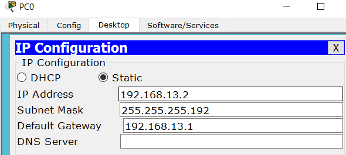
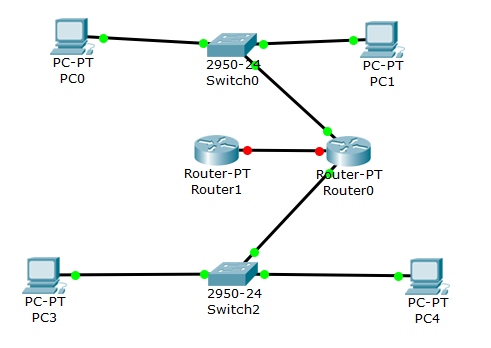
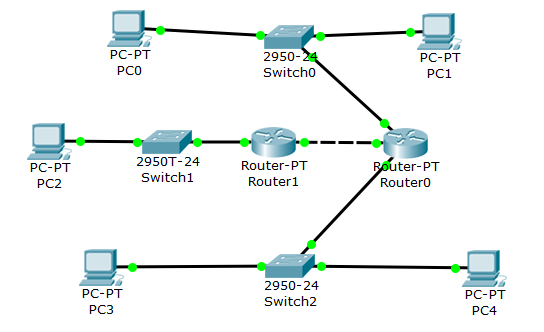
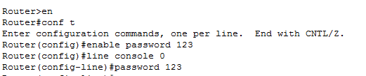
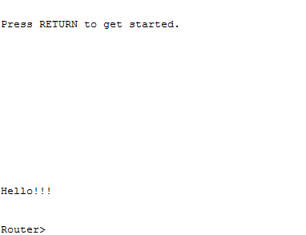
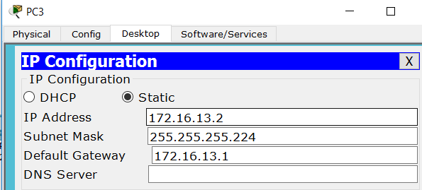
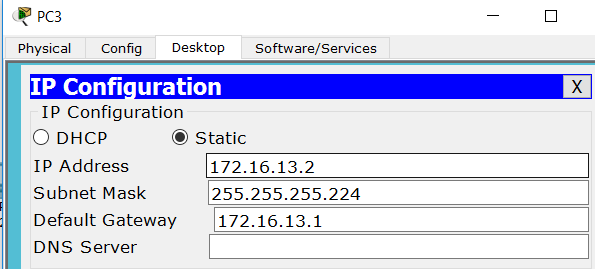

Главная/
Лабораторная работа №1/
Лабораторная работа №2/
Лабораторная работа №3/
Подготовка к экзамену/
Лабораторная работа №3
Отчет по лабораторной работе:
Расчет диапазонов подсетей

- Разместить на рабочем поле коммутатор и два компьютера и соединить их
- Подключить консольный кабель для настройки оборудования
- Настроить адресацию на добавленных компьютерах PC0:  PC1:
- Выполнить проверку работоспособности сети
- Добавить на рабочее поле еще один коммутатор с двумя компьютерами и настроить адресацию из другой подсети
- Соединить коммутаторы между собой и проверить работоспособность сети
- В случае неработоспособности сети объяснить причины
- Добавить маршрутизатор на рабочее поле
- Настроить интерфейсы маршрутизатора для существующих подсетей
- Проверить работоспособность сети
- В случае неработоспособности сети объяснить причины
- Указать шлюз по умолчанию и отправить сообщение
- Добавить на рабочее поле еще один маршрутизатор 
- Подключить к нему коммутатор и компьютер 
- Настроить сетевые настройки согласно таблице ниже
- Соединить между маршрутизаторы и настроить между ними сеть с префиксом /30
- Проверить работоспособность сети, отправив сообщение сети A в сеть С и из сети В в сеть С
- В случае неработоспособности сети объяснить причины
- Настроить статическую маршрутизацию между сетями
- Настроить на сетевых устройствах пароли для привилегированного режима 
- Настроить пароли на сетевых устройствах пароли на подключение через консоль и telnet
- Установить баннер на сетевое оборудование
- Проверить работу удаленного подключения 


 PC3:

PC4:
PC3:

PC4: